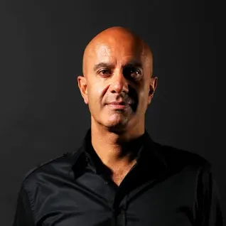

Shawnda is a famous life coach with a popular YouTube channel known as ‘Life with Shawnda’ that mainly focuses on dating & relationships, fashion, beauty, and lifestyle content. Shawnda exemplifies personal development coaching, helping clients navigate dating and relationships.
02
Corey Wayne
As a personal growth coach, Corey Wayne’s advice on self-reliance and performance improvement showcases the impact of personal development coaches.
A very active member on his YouTube channel, Corey Wayne regularly posts videos (sometimes even 2 a day) that tackle a variety of subjects including relationship advice, work-life balance, how to overcome substance addiction, handling change & opportunities, ways to build your confidence, gun safety issues, money management and lots more.
03

Robin Sharma
A globally celebrated leadership expert, philanthropist, and bestselling author of 15 books, Robin Sharma has been considered a top life coach for the past 25 years.
Many of his books have been international bestsellers including The Everyday Hero Manifesto, The 5 AM Club, The Monk Who Sold His Ferrari, and Who Will Cry When You Die? With millions of copies sold in over ninety-two languages and dialects, Robin Sharma is one of the most widely read authors in the world.
An orator par excellence, his speeches are known to leave the audience spellbound while providing original insights about performance, team spirit, delivering results, organizational success, and much more.
04
Lisa A Romano
Lisa A Romano is a life coach and mentor specializing in helping individuals heal from co-dependency, narcissistic abuse, abandonment issues, emotional neglect, psychological invisibility, and more. Her coaching belief is that most dysfunctional relationships (with self or others) are the result of childhood trauma, brainwashing, or other related incidents.
Bestselling Author of ‘The Road Back to Me’, Lisa was voted the #1 most influential person of 2020 by Digital Journal.
05
Bernadette Logue
Bernadette Logue is a popular transformation life coach who specializes in providing inspiration, motivation, and support for personal growth to her audience.
Bernadette offers new perspectives and practical tips for mastering the mind, creating positive changes in life via small steps & bigger leaps, creating spiritual, physical, psychological, and emotional balance, imbibing strength and resilience to deal with challenges gracefully, and leading balanced & prosperous lives.